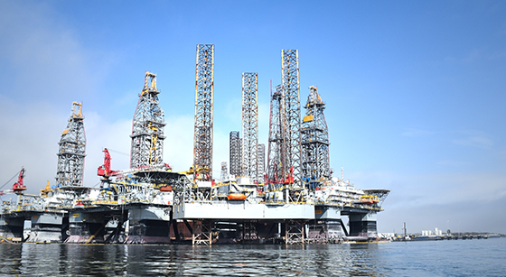
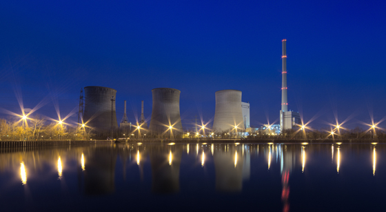
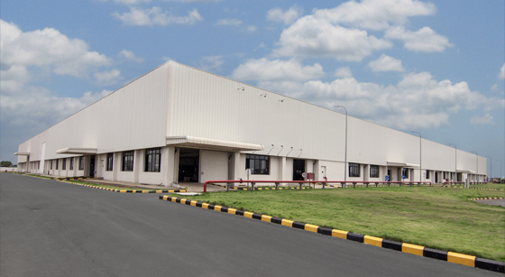

PLANT

- 화공 플랜트
- 세계의 인정을 받은 SK건설
- SK건설의 화공플랜트 사업은 정제, 석유화학,LNG 저장탱크, 오일 샌드(Oil Sands) 등 원유 정제 시설 부터 화학제품을 생산하는 석유화학 플랜트 건설까지 다양한 Product 포트폴리오를 구축하고 있습니다. 국내외 대형 프로젝트 수행을 통해 축적된 고도의 엔지니어링 기술과 프로젝트 매니지먼트 역량 및 시공 능력을 바탕으로 Total Solution Provider사업 모델을 구축하여, 고객에게 최적화된 서비스를 제공하고 있습니다. SK건설은 그동안의 성공적인 로젝트 수행경험을 바탕으로 Total Solution Provider로서 신규 시장 개척을 통해 화공 플랜트 사업의 글로벌 Top Tier로 성장할 것입니다.

- 발전 플랜트
- 축적된 기술과 풍부한 경험
- SK건설의 발전플랜트 사업은 기존의 석탄화력, 복합화력, 열병합,원자력, 신재생 발전 EPC 프로젝트의 수행 분야뿐만 아니라,민자발전사업의 디벨로퍼로서 모든 영역에서 고객에게 최상의 품질과 최적화된 서비스를 제공하고 있습니다. 또한 해외에서도 지속적으로 글로벌 신규 시장과 고객을 발굴하며 글로벌 진출 지역 확대와 신사업 발굴을 통하여 수주 다각화에 총력을 기울일 것 입니다.

포트폴리오 보러가기
- 산업 플랜트
- 세계를 선도하는 글로벌 건설사
- SK건설의 산업플랜트 사업은 반도체, 전기차 배터리 소재, 제약 생산시설 등 다양한 프로젝트를 수행하고 있으며 풍부한 시공실적과 고도의 기술인력 및 노하우를 바탕으로 세계 최고 수준의 사업 수행 능력을 발휘하고 있습니다. 앞으로도 산업플랜트사업은 지속가능한 성장 기반을 확보하기 위해, 축적된 다양한 Product 지식과 역량을 활용하고 미래 사업기회를 탐색하여 고객만족을 실현해 나갈 것입니다.